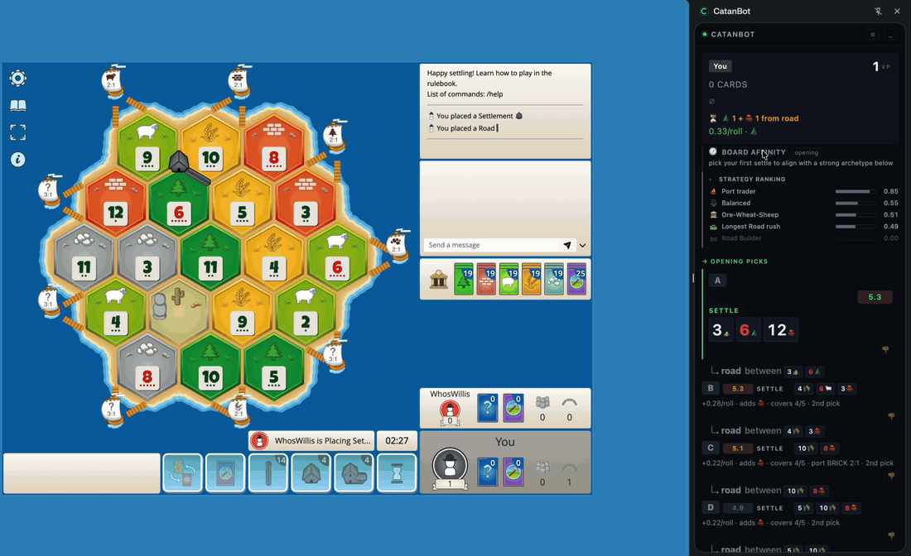
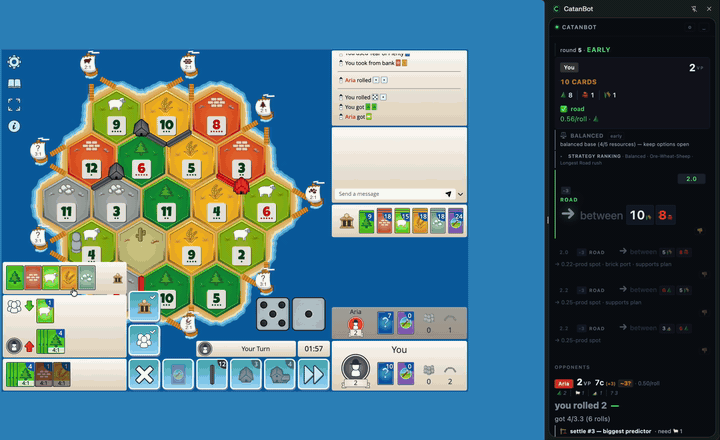
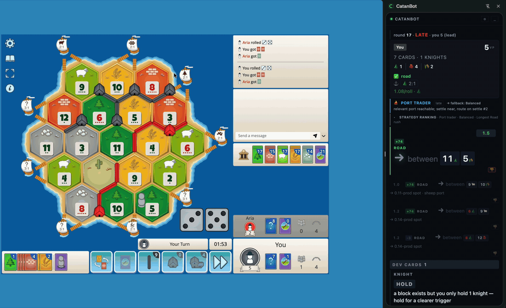
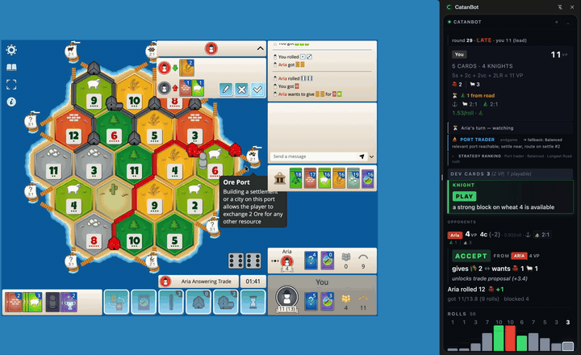

Chrome side-panel HUD plus a local Python bridge that ingests every WebSocket frame from colonist.io, runs a handcrafted recommender with dev-card hints and robber EV on top of catanatron, and renders the verdict in real time. No ML, no cloud. Your game state never leaves your machine.
Clipped from a real 4-player ranked game (15-VP target, 30 minutes, won 15 to 5).




You need both pieces for the full advisor: the Chrome extension renders the HUD, the bridge does the heavy lifting. The extension alone works too, with a leaner standalone engine.
Side-panel HUD on the right of every colonist.io tab. Manifest V3, no Tampermonkey. Ships a standalone JS recommender so it runs with zero install (experimental, reduced accuracy); add the bridge below for full-accuracy recs. A one-click Chrome Web Store install is on the way (listing submitted for review).
chrome://extensions, toggle Developer mode.extension/ folder.Unlocks 1-ply search-delta annotations, postmortem
rendering, eval sparkline, move-quality grading, and trade
evaluation. Runs locally on 127.0.0.1:8765.
git clone https://github.com/NoahLaforet/CatanBot.git cd CatanBot ./bin/catanbot live
First run auto-creates a .venv and installs the
bridge in about 30 s. Needs Python 3.11+. Windows users:
clone the repo, then double-click bin\setup-windows.cmd
to install WSL2 + Ubuntu and bootstrap the bridge inside it.
!! / ! / ?! / ? / ??), opp hand inference, and production rate.The bridge runs locally. Game state never leaves your
machine. The Chrome extension's only network destination is
127.0.0.1:8765, the bridge listening on localhost
only, and the extension's host_permissions in
manifest.json reflects that. Full privacy
policy: privacy.html.